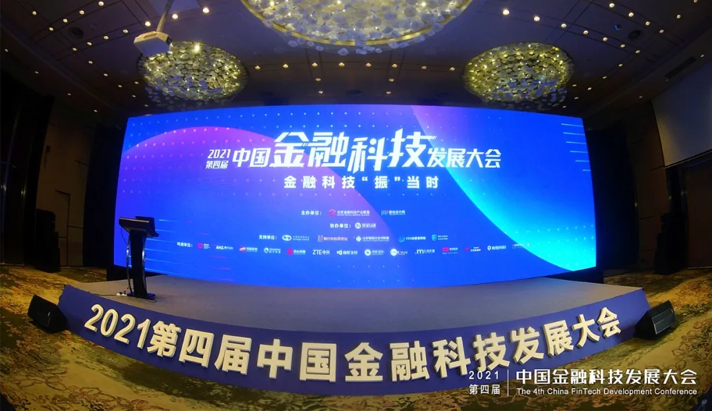

展会 | 首批完成金融分布式数据库验证测试 万里闪耀2021第四届中国金融科技发展大会
金融科技”振“当时， 数字技术齐发力。
5月27-28日，以”金融科技‘振’当时“为主题的2021第四届中国金融科技发展大会在渝举办。此次大会由北京金融科技产业联盟与移动支付网联合举办，重庆国家金融科技认证中心协办，围绕金融科技监管、后疫情时代发展、技术创新、落地成果等话题，邀请产业各方力量，在全面展现我国金融科技发展情况的同时，希望借助我国近些年的金融科技创新应用成果，探索助力金融数字化转型的方法和实现路径。

作为国产分布式数据库知名企业及北京金融科技产业联盟成员单位，万里数据库受邀参会，展示公司在新一代分布式数据库领域的产品技术成果与解决方案，致力于用底层核心的数据库技术助力金融行业实现数字化转型。
2021年是《金融科技（FinTech）发展规划（2019-2021年）》收官之年，也是我国“十四五”规划起航之年。经过三年的发展，我国金融科技创新应用硕果累累。截至2021年2月底，我国金融科技创新监管试点对外公示的项目已超80个，覆盖区块链、人工智能、5G、多方安全计算等前沿技术应用。
“十四五”规划和二〇三五年远景目标纲要明确提出要“稳妥发展金融科技”“加快金融机构数字化转型”，金融数字化转型迫在眉睫。2021年，是后疫情时代的振兴之年，以“金融回归本源”“支付回归本源”为原则，金融科技，“振”当时。藉此，2021第四届中国金融科技发展大会希望联合产业各方力量，汇聚先进的数字技术，实现金融科技的业务与技术专业融合，促进金融科技高质量发展。
首批金融分布式数据库检测结果发布
万里数据库强势入围
5月27日，北京国家金融科技认证中心副总经理唐辉在大会上作《分布式数据库第一批标准符合性验证结果发布暨金融应用评价模型介绍》，介绍了分布式数据库金融行业的应用难点，并宣布了首批金融分布式数据库检测结果。本次检测从技术架构（功能）、安全、灾难恢复、性能四个维度，邀请业内权威专家进行联合测试。
最终，GreatDB数据库以优异的产品技术能力完成基于《分布式数据库技术金融应用规范-技术架构》（JR/T 0203-2020）、《分布式数据库技术金融应用规范-灾难恢复要求》（JR/T 0204-2020）、《分布式数据库技术金融应用规范-安全技术要求》（JR/T 0205-2020）标准符合性验证测试，成为首批完成金融分布式数据库检测的数据库厂商。
▲万里数据库入围首批金融分布式数据库标准符合性验证测试
专设展位 万里成唯一受邀国产数据库厂商
金融行业由于其特殊性，对数据的安全性和稳定性要求极高，一旦发生故障，将产生无法预计的资金损失。因此，此次大会上，客户及合作伙伴对数据库的安全性、稳定性和性能等方面格外关注。
万里数据库作为唯一受邀的国产数据库厂商设立专门展位，与参会的国家级、省市级银行客户及金融领域产业链上下游的企业与合作伙伴展开技术创新、应用实践、项目合作等交流探讨。万里的分布式数据库由于其并行计算、动态扩展、数据安全及全面兼容国产主流软硬件等特性，能稳定、从容地支持金融领域海量数据、高并发、实时响应的应用场景，全面保障数据的易用、稳定、高效性，得到客户与生态伙伴的一致好评。
▲万里数据库展位参观咨询如潮
金融行业不仅是国民经济的重要组成部分，更关系到国计民生和普通大众。万里数据库希望在国家金融政策的指引下，在北京金融科技产业联盟等协会机构的带领下，与金融产业上下游生态伙伴进行技术、项目、人才等方面的广泛联合，形成金融领域的科技融合生态，发挥金融科技力量，重点攻破金融三大业务的痛点难点，扩大金融服务覆盖面，让金融科技的成果普惠千家万户，进而推动更高层次的绿色金融发展。
推荐阅读1.展会 | 赋能金融科技数字化转型 万里数据库受邀2021中国金融业金融科技应用发展研讨会（广东站）
2.要闻 | 万里总经理郑红云荣膺“2021中国数字生态英雄榜金融数字化服务杰出人物”奖
3. 生态|万里数据库成为光合组织金融科技委员会首批成员单位


扫码二维码
关注公众号